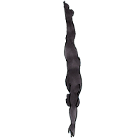
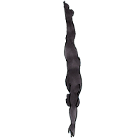
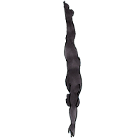
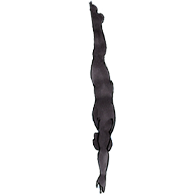

Dear Jan,
There are two kinds of diving. Into the swimming pool, which I hope I'll be able to teach you someday, and into the deepness of our own thoughts. These thoughts are what makes us, "us".
I hope you're really excited for 20th October 2020.
Well, you better be. Because you're special.

You're the only "you" that exists. You're here for a reason. You're loved. You rock! And this special day, is your birthdayyyyyy!
Ahem, ahem. Drumrolls please.
To our firsts, in Space-ahem.
Spaced Out.
Transcript [START OF CONVERSATION]:
[Janhvi, April 5, 2020]: Hey ansh, this is Janhvi Bplan 2nd year
[Janhvi, April 5, 2020]: I'm into magazine design and stuff.
.
[Ansh, June 3, 2020]: Do you believe in horoscopes?
[Janhvi, June 3, 2020]: I think they're fun.
.
[Ansh, August 9, 2020]: Meko retire bhi hona h
[Ansh, August 9, 2020]: And go to the bahamas
[Janhvi, August 9, 2020]: This is the dream.
.
[Ansh, August 24, 2020]: Teri fav dish kya h
[Janhvi, August 24, 2020]: Homemade I would say pizza Abhi boht bana rhe hai mazza aajata hai
[Ansh, August 24, 2020]: meko pizza chahiye pizza is my fav
[Ansh, August 24, 2020]: I love pizza like soooo much
[Janhvi, August 24, 2020]: It’s too good homemade
[Ansh, August 24, 2020]: Cuz tum kitna bhi cheez daal skte ho
[Janhvi, August 24, 2020]: Haaaa
[Ansh, August 24, 2020]: Lol tu toh foodie nikli
[Janhvi, August 24, 2020]: Hahaha who isn’t
[Janhvi, August 24, 2020]: Have you had indori poha
[Ansh, August 24, 2020]: Indore is my hometown!
.
[Ansh, August 24, 2020]: Aur kya secret talents h tere
[Janhvi, August 24, 2020]: I can play guitar
.
[Ansh, August 25, 2020]: Accha you were kind of movies do you likee
[Ansh, August 25, 2020]: *were telling me
[Janhvi, August 25, 2020]: Rom coms lol
[Janhvi, August 25, 2020]: Tell me your favs I’ll also watch
[Ansh, August 25, 2020]: Or we can watch something together
[Janhvi, August 25, 2020]: Oh yeah we can do that do you have any movie in mind
[Janhvi, August 25, 2020]: Have you seen the matrix?
.
[Ansh, August 25, 2020]: I’m a swiftie toooo
[Janhvi, August 25, 2020]: Omgg really
[Janhvi, August 25, 2020]: i worshippp her im a big fan
.
[Ansh, August 28, 2020]: Movieeeee
[Janhvi, August 28, 2020]: Hiiii
[Janhvi, August 28, 2020]: Let’s do it
[Ansh, August 28, 2020]: What would you take
[Janhvi, August 28, 2020]: Red
[Janhvi, August 28, 2020]: Lol
.
[Janhvi, August 28, 2020]: Haha Keanu is so cute
.
4381 messages scanned [END OF CONVERSATION]